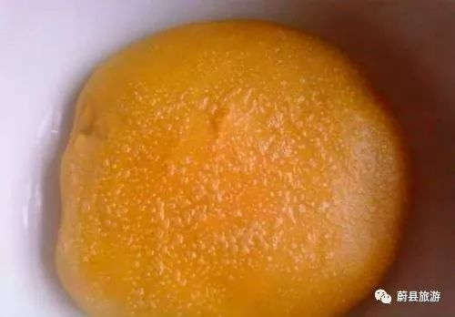
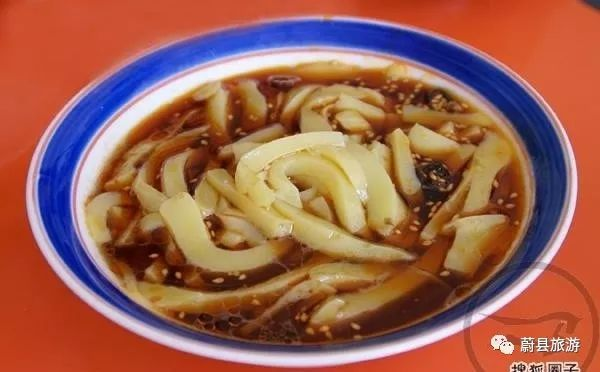
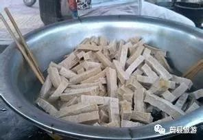
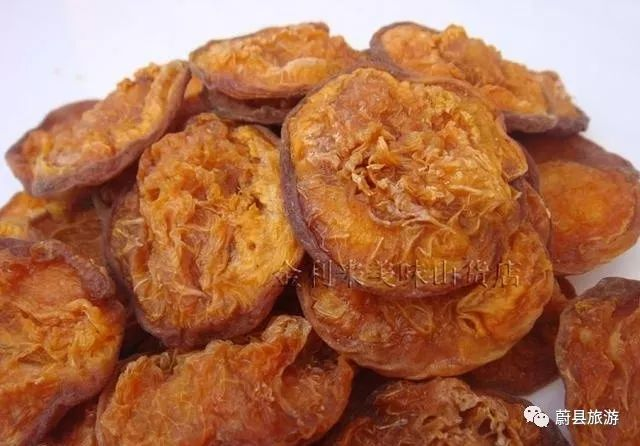
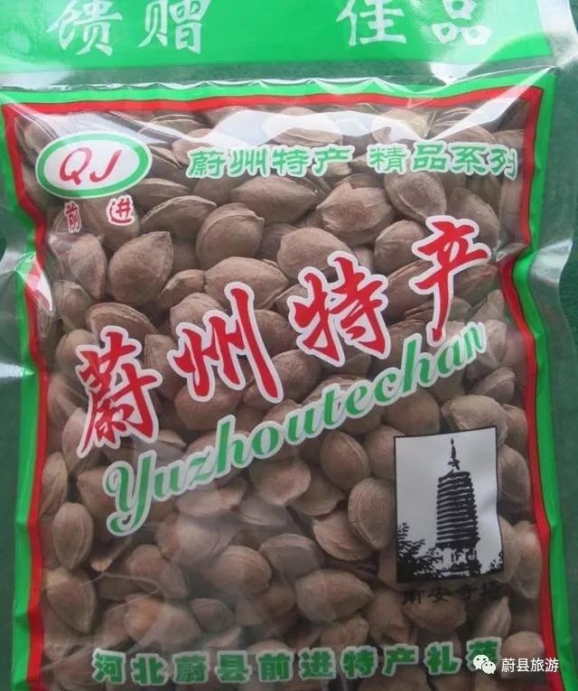
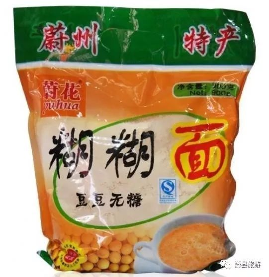
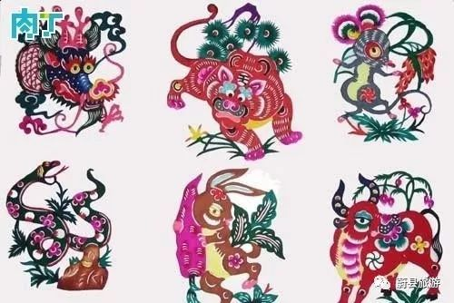

1.蔚县小米
蔚县小米，是当地人的一种主食，粒大色黄，营养价值高，富含多种维生素，蛋白质，粗纤维，和人体必需的色氨酸等，熬成稀粥，香气扑鼻，易于消化

蔚县小米
2.蔚县黄糕
黄糕 是最具蔚县特色的食物，黍子去皮成为黄米面，经过蒸制而成的，是蔚县人民的日常主食。还能包上糖或者豆陷炸制成炸糕，香酥可口

蔚县黄糕
3.蔚县粉坨
分为水晶粉，豆面粉，山药粉，夏天吃上一碗消暑止渴，凉意顿生

蔚县粉坨
4.豆腐干
豆腐干 各地都有豆腐，但却少有豆腐干。将豆腐装入专门的容器，上边用石磨压制，后切成长方条，太太阳下暴晒5个小时后放入事先调好的卤水里，慢火煮2小时，即可食用，美味精道

豆腐干
5.木瓜杏干
木瓜杏干，用当地的木瓜杏去核晒制而成的，块大肉厚，酸甜可口，有助消化，降血脂，健脾开胃，生津止渴的功效，制作过程不添加任何添加剂，是纯天然的

木瓜杏干
6.蔚县开口杏核
开口杏核采用蔚县当地的杏扁做原料，经特殊加工而成，食用方便，风味独特，有润肺，生津，止咳养颜，抗衰老的作用，经常食用对增强人体免疫力有帮助

蔚县开口杏核
7.蔚县糊糊面
糊糊面 是蔚县传统小吃，用豌豆磨制而成，做的时候锅中加水，慢慢将糊糊面到人锅中，边倒边用勺子搅动，开锅以后就能食用，香气袭人，喝上一口，满嘴的豌豆香

蔚县糊糊面
8.蔚县剪纸
蔚县剪纸，当地人叫窗花，逢年过节贴在窗户上，表达吉祥如意，喜庆美满。蔚县剪纸历史悠久，做工考究，现已被列入国家非物质文化遗产，还入选世界《人类非物质文化遗产代表名录》

蔚县剪纸
9.蔚县糖麻叶
糖麻叶是蔚县人的传统小吃，具有鲜明的地方特色，有许多饭庄面铺都在制作，在街头售卖。

.蔚县糖麻叶